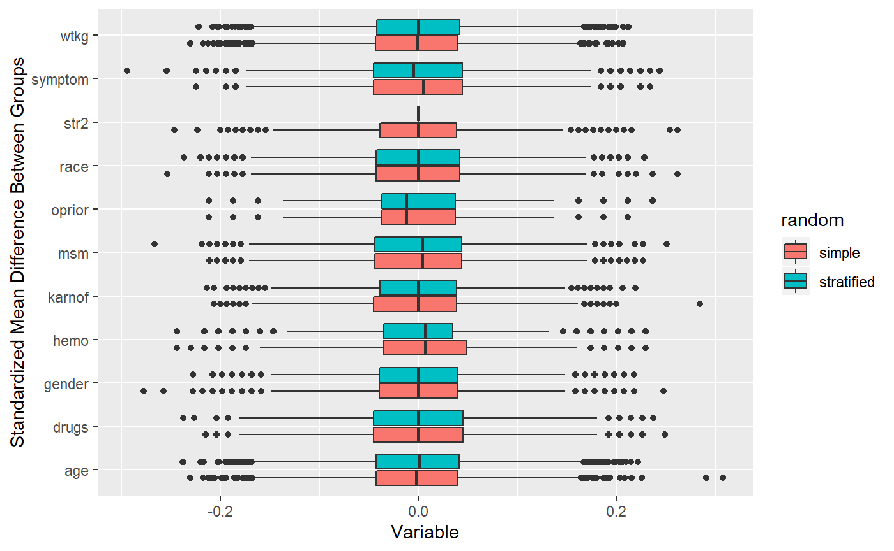
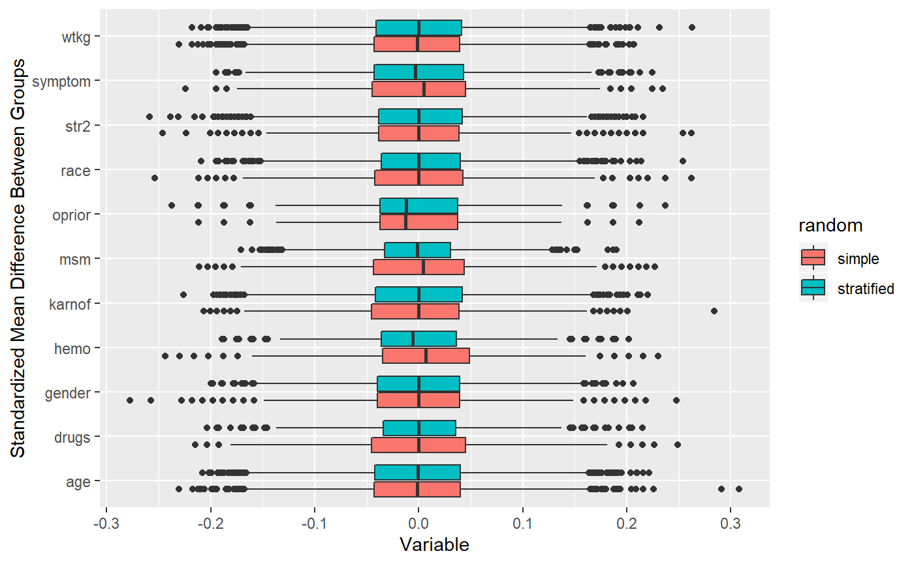
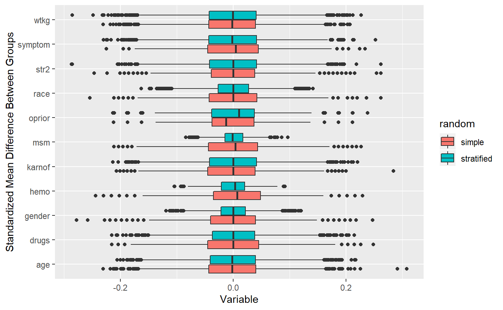

jumble: Stratified Randomization
Kevin W. McConeghy
2020-01-06
Source:vignettes/04-stratification.Rmd
04-stratification.RmdWelcome to jumble! This program was written as a companion to academic work performed by researchers at Brown University to perform different randomization strategies with cluster-randomized nursing home trials.
Introduction
In this vignette we go over how to do a stratified randomization, both with a single category and using a distance measure.
Example dataset
The example dataset used in this package is freely available and comes from a clinical HIV therapy trial conducted in the 1990s.(Hammer SM 1996) See: ?jumble::ACTG175
Note An important limitation of most clinical trials is that enrollment is graduated with individual patients consented and enrolled one at a time. However, cluster randomized trials can often identify all potential clusters before randomization occurs which allows more finessed randomization techniques.
Single covariate stratification
A common method for stratification is to take 1-2 covariates which are considered to be very important clinically for the outcome. Often a cluster is used (i.e. randomized within facility, hospital, village). In a cluster randomized trial, a variable which is correlated with the cluster may be more likely to be imbalanced so if you were particularly concerned about one thing that would be a potential.
Identify a strong predictor of the primary outcome
Allow the trial design is a little more complicated, we will simply look at the cens event (A CD4 T cell drop of 50 or more, AIDs defining event, or death).
##
## Call:
## glm(formula = cens ~ ., family = binomial, data = df[, c("cens",
## vars)])
##
## Deviance Residuals:
## Min 1Q Median 3Q Max
## -1.2829 -0.8319 -0.6907 1.2494 2.1987
##
## Coefficients:
## Estimate Std. Error z value Pr(>|z|)
## (Intercept) -0.477387 1.257932 -0.380 0.70432
## age 0.004197 0.008559 0.490 0.62384
## race -0.283396 0.180542 -1.570 0.11649
## gender 0.329055 0.290614 1.132 0.25752
## symptom 0.527787 0.175816 3.002 0.00268 **
## wtkg 0.009280 0.005528 1.679 0.09322 .
## hemo -0.275731 0.356463 -0.774 0.43921
## msm -0.124234 0.254553 -0.488 0.62552
## drugs -0.576851 0.249003 -2.317 0.02052 *
## karnof -0.018931 0.012015 -1.576 0.11513
## oprior 0.114416 0.436392 0.262 0.79318
## str2 0.477076 0.152291 3.133 0.00173 **
## ---
## Signif. codes: 0 '***' 0.001 '**' 0.01 '*' 0.05 '.' 0.1 ' ' 1
##
## (Dispersion parameter for binomial family taken to be 1)
##
## Null deviance: 1228.4 on 1053 degrees of freedom
## Residual deviance: 1184.6 on 1042 degrees of freedom
## AIC: 1208.6
##
## Number of Fisher Scoring iterations: 4We identify a few important predictors, str2 is an indicator for prior exposure to anti-retroviral therapy.
In general if you have no prior knowledge, you should select strata which are highly predictive of outcome.
For an example, lets examine str2.
Random assignment within symptom
## str2 pidnum group
## 1 0 10896 b
## 2 0 10900 a
## 3 0 10907 b
## 4 0 10913 a
## 5 0 10920 a
## 6 0 10923 bJoin back to dataset
## Joining, by = c("str2", "pidnum")##
## a b
## 0 218 218
## 1 309 309Nearly equal assignment by strata=0 or strata=1
How does our stratified randomization perform vs. simple randomization?
We can see the how much tighter covariate differences are if we perform a simulation of 10000 randomizations under either strategy.
## 10000 randomizations for Random Assignment - Simple
## ## Time difference of 14.18693 secs## 10000 randomizations for Stratification, one var## Time difference of 1.118263 mins As you can see, stratification is very effective at tightening a simple strata variable.
What about a continuous measure age? You can stratify by category:
## 10000 randomizations for - continuous categorized## Time difference of 1.181809 mins Works pretty well!
Works pretty well!
If these variables are strongly correlated with outcome then you will see some reduction in variance, but re-randomization will work better if you have a large number of predictors with weak associations with the outcome.
Multivariate stratification
An additional option is to create multiple strata, but this can get complicated and runs into issues with finite numbers in individual cells. It is dependent on sample size, but usually is not feasible to do more than 1:3 stratifications.
The alternative to a single stratification, is to use a multivariate balance measure, create arbitrary strata (since its a continuous measure) and randomly assign within strata.
Mahalanobis computation
In this case we are computing the distance of each observation from the group mean.
\[ M \equiv ({X_i} - \bar{X}) ' cov(X)^{-1} ({X_i} - \bar{X}) \]
df_mdis <- select(df, vars) %>%
as.matrix(.)
mdis_vals <- Rfast::mahala(df_mdis, colMeans(df_mdis), sigma=cov(df_mdis))
df_mstr <- df %>%
mutate(mdis = mdis_vals, #M-distance values
mdis_cat = ntile(mdis, 4)) # categories M-distance
## 10000 randomizations for M-distance stratification## Time difference of 1.243111 mins Not significantly different from simple randomization!
## age race gender symptom wtkg hemo msm drugs karnof oprior str2
## age 1.00 -0.07 0.09 0.03 0.18 -0.26 0.19 0.07 -0.11 0.06 0.07
## race -0.07 1.00 -0.29 -0.06 -0.06 -0.08 -0.32 0.10 0.06 0.03 -0.07
## gender 0.09 -0.29 1.00 0.06 0.22 0.11 0.61 -0.17 -0.01 0.06 0.00
## symptom 0.03 -0.06 0.06 1.00 0.01 -0.06 0.11 0.01 -0.10 0.03 0.08
## wtkg 0.18 -0.06 0.22 0.01 1.00 -0.09 0.15 0.00 0.03 0.00 -0.09
## hemo -0.26 -0.08 0.11 -0.06 -0.09 1.00 -0.39 -0.09 0.09 0.02 0.11
## msm 0.19 -0.32 0.61 0.11 0.15 -0.39 1.00 -0.24 -0.06 0.02 -0.02
## drugs 0.07 0.10 -0.17 0.01 0.00 -0.09 -0.24 1.00 -0.06 -0.04 0.01
## karnof -0.11 0.06 -0.01 -0.10 0.03 0.09 -0.06 -0.06 1.00 -0.06 -0.09
## oprior 0.06 0.03 0.06 0.03 0.00 0.02 0.02 -0.04 -0.06 1.00 0.13
## str2 0.07 -0.07 0.00 0.08 -0.09 0.11 -0.02 0.01 -0.09 0.13 1.00Notice how most variables have very weak correlations? This is why the stratified analysis with a Mahalanobis distance doesn’t perform better than simple randomization. The Mahalanobis distance is an absolute measure from the covariate means, so it balances groups well when covariates are highly correlated (i.e. units grouped together by distance have similar values). But if each variable randomly varies from the mean, then using distance will not balance the groups more than simple randomization. For example, two units could be wildly different by characteristics but technically have the same distance from the means. The only variable which balances at all is MSM which is correlated a little with gender.
If we repeat the analysis using MSM, Hemo, gender, and age.
m_vars <- c('msm', 'hemo', 'gender', 'race')
df_mdis <- select(df, m_vars) %>%
as.matrix(.)
mdis_vals <- Rfast::mahala(df_mdis, colMeans(df_mdis), sigma=cov(df_mdis))
df_mstr <- df %>%
mutate(mdis = mdis_vals, #M-distance values
mdis_cat = ntile(mdis, 10)) # categories M-distanceMahalanobis distance using only 4 moderately correlated variables.
## 10000 randomizations for M-distance stratification## Time difference of -2.589606 secs See how the distance measure performs better when selecting a few correlated variables?